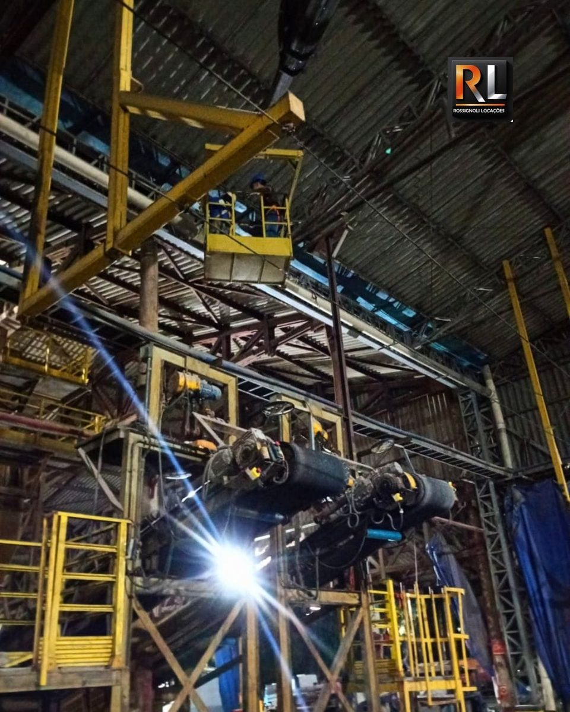

Início › Caminhão munck em Alfenas
Alfenas e região · 24 horas
Caminhão munck em Alfenas, com operador.
Içamento de cargas, contêiner, máquinas, estruturas, caixa d'água e trabalho em altura com cesto aéreo em Alfenas. O caminhão sai de Varginha e o valor total, com deslocamento, é fechado pelo WhatsApp antes de sair.
- Operador incluso
- Valor total antes de sair
- Alfenas: 50 a 100 km

Quando chamar
O que mais pedem em Alfenas e região.
- Estruturas e pré-moldados de obra
- Equipamentos de armazém de café
- Máquinas e equipamentos
- Manutenção em altura com cesto
- Remoção e mudança de máquinas
- Cargas pesadas em local de difícil acesso
Também atendemos as cidades vizinhas: Machado, Fama, Areado, Campos Gerais.
Como pedir
Foto, peso e distância. A gente responde com o valor.
Você manda
O que é, peso aproximado, distância do caminhão até o ponto e o endereço em Alfenas. Uma foto ajuda muito.
A gente avalia
Conferimos acesso, piso e rede elétrica antes de agendar.
Valor total
Orçamento com deslocamento desde Varginha incluso e horário combinado.
Operação
Patolamento, área isolada e serviço feito com operador.
Dúvidas
Perguntas sobre munck em Alfenas.
Vocês atendem em Alfenas?
Sim. O caminhão sai de Varginha e Alfenas fica na faixa de 50 a 100 km. O deslocamento já entra no valor fechado que a gente passa antes de sair.
Como é cobrado?
Você manda o que é, o peso aproximado, a distância do caminhão até o ponto e uma foto. A gente responde com o valor total, com deslocamento e operador incluídos, antes de agendar.
Atendem fora do horário comercial?
Sim. O atendimento é 24 horas, todos os dias, o que ajuda em serviço com a empresa ou a rua fechada.
Serviços
Outras cidades
Manda a foto. A gente manda o valor.
Atendimento 24 horas em Alfenas, Varginha e nas cidades num raio de 200 km.